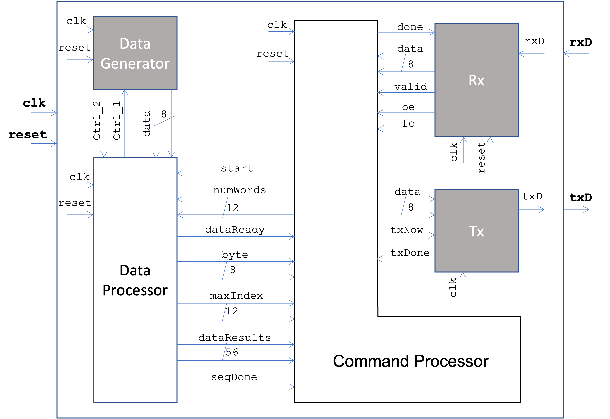

|
|
|
The global architecture of the peak detector that you should adopt is shown in Figure 7. The Rx, Tx and Data Generator modules are provided, and shown shaded in grey. Brief explanations of the interfaces and signal functions are given in the following sections. The detailed operation of the modules can be understood by examining the code.

The functions of the signals in the Tx module interface are described in Table 4.1. Please note these port names and directions reflect the port names and directions used in the Command Processor interface. Some ports have different but easy to understand names in the Tx port description, and clearly an input port to the Command Processor will be an output port to the Transmitter, and vice versa.
| Signal | Description |
|---|---|
| txD | Serial output data line. This signal is connected to the external output pin on the FPGA, that, in turn, is connected to the serial data input of the receiver on the PC side. |
| data | Contains the data to be serialised and transmitted. Must be valid in the clock cycle that send is high. |
| txNow | Called send in the Tx port description. Used to trigger a send operation. The Command Processor should set this signal high for a single clock cycle to trigger a send. When this signal is set high data must be valid. Should not be asserted unless txDone is high. |
| txDone | Called ready in the Tx port description. This signal goes low once a send operation has begun and remains low until it has completed and the module is ready to send another byte. |
| clk | System clock. A 100 MHz clock is expected. |
The functions of the signals in the Rx module interface are described in Table 4.2. Please note these port names and directions reflect the port names and directions used in the Command Processor interface. Some ports have different but easy to understand names in the Rx port description, and clearly an input port to the Command Processor will be an output port to the Receiver, and vice versa.
| Signal | Description |
|---|---|
| rxD | Serial input data line. This signal is connected to the external input pin on the FPGA, that, in turn, is connected to the serial data output of the transmitter on the PC side. |
| data | The received data is parallelised and made available on this 8-bit wide bus. Data for current word is valid when valid is high. |
| valid | Called dataReady in the Rx port description. Goes high when all of the bits in a serial transmission of a word have been detected. It goes low when done is set high by the upper layer logic, to be ready to receive the next word and indicate completion of the current word. |
| done | Called rxDone in the Rx port description. Used to signal to the receiver that data on the bus has been successfully read, and the register can be cleared. Should be set high by the upper layer logic (i.e. Command Processor) for 1 clock cycle. This signal is read by the Rx module to reset the data ready signal and also to check for overrun errors. |
| clk | System clock. A 100 MHz clock is expected. |
| reset | Synchronous reset. |
| oe | Goes high when an overrun error is detected; i.e. a new word is received, but upper layer logic has not signalled that previous byte has been read. |
| fe | The start and stop bits are not detected in order according to the RS232 protocol; i.e. a framing error has occurred. |
One important consequence of the UART serial link protocol and the baud rate is that the serial signalling rate is much less than the clock frequency. The clock frequency of 100 MHz is over four orders of magnitude higher than the 9600 baud rate over the serial link. As a consequence, data retrieval needs to be halted periodically while the slow serial communication completes. This is effected by the start signal. Given in Table 6 are descriptions of this and other lines shared between the Data Processor and Command Processor.
| Signal | Description |
|---|---|
| start | A data retrival cycle is initiated by start being driven high. The Data Consumer should check this value on a rising edge of the clock. The value of start being high at the beginning of a clock cycle is a signal for data retrieval to take place; if the value is low, data retrieval will not take place. Used to start and halt data retrieval in the Data Processor, while the Command Processor communicates with the PC via the serial link, which operates at a much lower frequency than the clock rate. |
| numWords | A 12 bit wide set of data lines that contain the number of bytes to process, in binary-coded-decimal (BCD) format. Each decimal digit is encoded in 4 bits. |
| dataReady | Asserted (active-high) by the Data Processor to signify that a new byte of data that has been supplied by the Data Generator is ready on the 8-bit byte line. |
| byte | Contains the latest 8-bits wide data word retrieved from the Data Generator. Data is valid when dataReady is high. |
| seqDone | Asserted (active high) for one clock cycle when the number of bytes specified in numWords has been processed, and the 7 bytes comprising the peak and the 3 bytes either side of it are contained in dataResults, which is 56 bits wide. |
| dataResults | A 56-wide set of lines that contain the 7 bytes comprising the peak in the middle (i.e. bit indices 31 down to 23), and the 3 bytes either side of it. Data is valid when seqDone is high. |
| maxIndex | Contains the index of the peak byte in BCD format. |
The control lines ctrl_1 and ctrl_2 are shared between the Data Processor and Data Generator, and are operated in accordance with the two-phase protocol described previously.
|
|
|